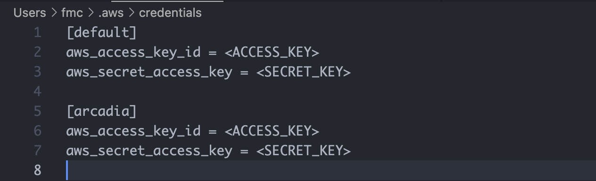
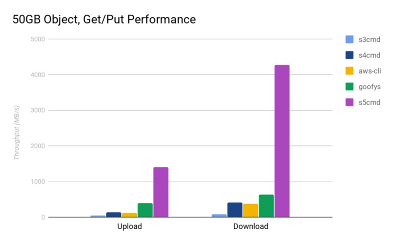

How to use the AWS S3 command line tool
Accessing the shell for this lesson
For this lesson, we need to have access to a Unix shell. If you're not sure how to open a terminal on your computer, see these instructions.
What is the AWS S3 CLI and why do we care about it?
Arcadia uses Amazon Web Services (AWS) S3 to store our files remotely, sometimes as backup, sometimes to host files temporarily before we deposit them to a FAIR data repository.
Some of us may already know how to interact with AWS S3 through its own user interface or using a tool like Cyberduck. While these options work fine, they limit the speed at which you can interact with S3 (they put explicit caps on upload/download speeds) and may be burdensome for large scale changes (think: updating 100s of files).
This is where the AWS S3 command line tool comes into play. During this workshop, we'll learn about two tools: the official AWS CLI and s5cmd.
Command line tools may be intimidating but great news: if you attended the AUG workshops in the last 2 weeks focusing on shell commands, you already know the shell versions of all the commands (ls, cp, mv, rm etc.) that we'll go through in this workshop. So let's get started!
Downloading and installing the AWS CLI
The download and installation instructions for the AWS CLI can be found here. If you're on a Unix machine, you can use these two commands to start the installation process:
On Mac:
curl "https://awscli.amazonaws.com/AWSCLIV2.pkg" -o "AWSCLIV2.pkg"
sudo installer -pkg AWSCLIV2.pkg -target /
rm AWSCLIV2.pkg
On Linux:
curl "https://awscli.amazonaws.com/awscli-exe-linux-x86_64.zip" -o "awscliv2.zip"
unzip awscliv2.zip
sudo ./aws/install
rm awscliv2.zip
Once the installation process is complete run which aws to make sure installation worked as expected.
Configuring the AWS CLI to work with your credentials
Getting your AWS credentials to use with the AWS CLI
This section assumes you are part of the Arcadia Science AWS account. If you're not, no worries. I'll securely share credentials with you. For AWS users, detailed instructions can be found here. The summary:
- Login to the AWS console.
- Click on your username on the top right and select "Security credentials"
- Scroll down to the "Access keys for CLI, SDK, & API access" section, select "Create access key" and go through the steps.
- Record your access key and access secret in a secure place (or download it as a CSV temporarily) and do not share with anyone!
Now we need to tell the AWS CLI how to use your credentials.
With aws configure
This section assumes you have not run aws configure before. If you have, you can create a new AWS credential profile by passing the --profile arcadia to the aws configure command.
Run aws configure. It'll ask for your AWS Access Key ID, AWS Secret Access Key, Default region name and Default output format one command at a time.
Enter the credentials you got in the previous section for the first two settings. Our Default region name is us-west-1 and Default output format is json.
It should look like this:
aws configure
AWS Access Key ID [None]: <YOUR_ACCESS_KEY>
AWS Secret Access Key [None]: <YOUR_ACCESS_SECRET>
Default region name [None]: us-west-1
Default output format [None]: json
Once the setup is complete you can inspect the contents of your AWS configuration file with cat ~/.aws/credentials. You'll most likely only see the [default] profile. These are the credentials the AWS CLI will use by default when you run a command. If you created an arcadia profile and want to use those, you have to explicitly pass them as part of the CLI commands below.

Since these credentials only belong to the Arcadia Science organization, when you run a command (think: list all the S3 buckets), it'll only run them within the Arcadia organization context (think: the CLI will only show the S3 buckets of the Arcadia Science organization). You can also create credentials that only have access to parts of the organization (think: a single EC2 instance or a single S3 bucket), and in those cases the CLI context will again change.
[Advanced] When working with an EC2 instance
This section is out of the scope of this workshop, but it is important to note: When working with an AWS EC2 instance you can enable S3 access by using IAM roles. Instructions for that can be found here.
Creating test data
Let's create some basic test data by copying the following commands:
cd ~/Desktop
mkdir s3-test
cd s3-test
echo "copy" >> copy.txt
echo "move" >> move.txt
mkdir sync
cd sync
echo "sync 1" >> sync1.txt
echo "sync 2" >> sync2.txt
echo "sync 3" >> sync3.txt
cd ..
ls
S3 CLI command structure
The general structure of an AWS S3 CLI command follows the following structure:
aws s3 <COMMAND> <FLAGS> <SOURCE_PATH> <TARGET_PATH>
<COMMAND>could becp,mv,syncetc.<FLAGS>could be something like--dryrunto display the operations that would be performed using the specified<COMMAND>without actually running them.<SOURCE_PATH>and<TARGET_PATH>could be a path to a local file/directory, or an S3 file/directory path. For local files, the paths can be absolute or relative.
As an example, something like aws s3 cp lesson.md s3://aug-workshop-demo/lesson.md would copy the local lesson.md file from my computer to the S3 bucket aug-workshop-demo and create a file called lesson.md.
S3 commands we'll work with
For all the following commands, we'll be working with an S3 bucket called aug-workshop-demo hosted through Arcadia's AWS account. For the workshop, we'll focus on a small but useful subset of commands, but you can find the full reference documentation here.
ls
In the first shell workshop, we learned that ls lists contents of a directory (list). It serves the same function for the S3 CLI.
Let's start with listing all the Arcadia Science S3 buckets:
aws s3 ls
Now let's explore what one of these buckets looks like, starting with the aug-workshop-demo bucket.
aws s3 ls s3://aug-workshop-demo
If everything went correctly, you should see the demo folder under the aug-workshop-demo bucket.
cp
In the second shell workshop, we learned that cp copies a file or directory. The S3 command also serves a similar purpose. Let's try it out by trying to copy the file we created earlier copy.txt to the S3 bucket under a folder with your initials. For me, this would be in s3://aug-workshop-demo/fmc/.
aws s3 cp copy.txt s3://aug-workshop-demo/fmc/copy.txt
If you ignore the last part of the S3 path, it'll create a file with the same name:
aws s3 cp copy.txt s3://aug-workshop-demo/fmc/
Alternatively, you can give a new name to the file on S3:
aws s3 cp copy.txt s3://aug-workshop-demo/fmc/new-copy.txt
Let's see the changes:
ls
aws s3 ls s3://aug-workshop-demo
aws s3 ls s3://aug-workshop-demo/fmc/
Now let's try copying the sync directory by:
aws s3 cp sync/ s3://aug-workshop-demo/fmc/
That failed! This is because the cp command directly works with individual files. For copying folders, we need to use the --recursive flag. So, let's try this:
aws s3 cp --recursive sync/ s3://aug-workshop-demo/fmc/
aws s3 ls s3://aug-workshop-demo/fmc/
mv
In the second shell workshop, we learned that mv moves or renames a file or directory. The S3 command also serves a similar purpose. Let's start with a moving example by trying to move the move.txt file we created earlier to the S3 bucket under a folder with your name (not your initials this time, since we'll do another move later). For me, this would be in s3://aug-workshop-demo/mert/.
aws s3 mv move.txt s3://aug-workshop-demo/mert/move.txt
Let's see the changes:
ls
aws s3 ls s3://aug-workshop-demo
aws s3 ls s3://aug-workshop-demo/mert/
Now, let's do a move within S3 by moving the file from s3://aug-workshop-demo/mert/move.txt to s3://aug-workshop-demo/fmc/move.txt:
aws s3 mv s3://aug-workshop-demo/mert/move.txt s3://aug-workshop-demo/fmc/move.txt
And now let's visulize it:
aws s3 ls s3://aug-workshop-demo/mert/
aws s3 ls s3://aug-workshop-demo/fmc/
The former folder is empty and the latter now has the move.txt.
rm
In the second shell workshop, we learned that rm deletes a file or directory. The S3 command also serves a similar purpose.
Let's delete the copy.txt file:
aws s3 rm s3://aug-workshop-demo/fmc/copy.txt
aws s3 ls s3://aug-workshop-demo/fmc/
Let's try to delete the contents of s3://aug-workshop-demo/fmc/:
aws s3 rm s3://aug-workshop-demo/fmc/
aws s3 ls s3://aug-workshop-demo/fmc/
You'll see that didn't work. This is because similar to cp, rm works with individual files by default. For folder deletions, you need to use the --recursive flag:
aws s3 rm --recursive s3://aug-workshop-demo/fmc/
aws s3 ls s3://aug-workshop-demo/fmc/
sync
sync is a convenient command for syncing directories (local to S3, S3 to local, or S3 to S3). It recursively copies new and updated files from the source directory to the destination. Here new and updated are important key words. If a file already exists, it'll not copy it to S3. Let's see it in action:
aws s3 sync . s3://aug-workshop-demo/fmc/
aws s3 ls s3://aug-workshop-demo/fmc/
Now, everything is in S3. Let's try it again:
aws s3 sync . s3://aug-workshop-demo/fmc/
Nothing happens! This is because all of the files are as they are on S3. Let's make a change to the copy.txt file:
echo "new copy" >> copy.txt
aws s3 sync . s3://aug-workshop-demo/fmc/
aws s3 ls s3://aug-workshop-demo/fmc/
A note on data integrity
For upload related commands (cp, mv, sync), the AWS CLI will calculate and validate the MD5 checksums. If the checksum doesn't match the expected values, the upload command will fail. In the case of mv, the local files you're moving will not be deleted. By default, the AWS CLI will re-try the upload up to 5 times and only then exit the operation. More details can be found here.
Downloading data from S3
Our examples so far have been about uploading data to S3, but we can easily switch the direction of operations to download data from S3. The main change is the argument order. To download data from S3, we need S3 to be our source and local file system to be the target.
Let's copy and move some data from S3 as an example:
aws s3 cp s3://aug-workshop-demo/fmc/copy.txt new-copy.txt
aws s3 mv s3://aug-workshop-demo/fmc/move.txt new-move.txt
aws s3 ls s3://aug-workshop-demo/fmc/
--dryrun
In using all of these commands, if a command writes or modifies data, it's a good idea to visualize what changes will be made to your local system or the S3 storage system before making them. For this the --dryrun flag is your friend.
When used, it displays the operations that would be performed using the specified command without actually executing them. So, if you're in the wrong directory or about to modify or delete a file irreversibly by mistake, it allows you to catch these issues ahead of time. Let's see it in action:
aws s3 rm --dryrun --recursive s3://aug-workshop-demo/fmc/
[Optional] Advanced usage with s5cmd
s5cmd is an unofficial tool to interact with AWS S3 through the command-line. In this section, we'll talk about the installation instructions and the differences to the official AWS S3 CLI. But first, why do we care about s5cmd?
Why?
Great news: if your machine is configured to work with the AWS CLI, it's by default configured to work with s5cmd! It has two benefits over the official S3 CLI: 1. It's much faster. This is due to effective parallelization and bandwidth saturation. See this blog post for benchmarking data.  2. It also is compatible with Google Cloud Storage (GCS) in case you have to work with any databases that are hosted on GCS (think: Alphafold).
Downloading and installing the s5cmd CLI
On Mac, you can install s5cmd with Homebrew: brew install peak/tap/s5cmd.
Alternatively, you can use the command-line on both Mac and Linux:
cd ~/Desktop
curl -L "https://github.com/peak/s5cmd/releases/download/v2.0.0/s5cmd_2.0.0_macOS-64bit.tar.gz" --output s5cmd.tar.gz
tar -xvf s5cmd.tar.gz
mv s5cmd /usr/local/bin
On Linux:
curl -L "https://github.com/peak/s5cmd/releases/download/v2.0.0/s5cmd_2.0.0_macOS-64bit.tar.gz" --output s5cmd.tar.gz
tar -xvf s5cmd.tar.gz
mv s5cmd /usr/local/bin
After this you should be able to run s5cmd version. For viewing full functionality run s5cmd -h.
Differences to the official CLI
Order of commands
You may remember the order of commands for the AWS CLI looked like this:
aws s3 <COMMAND> <FLAGS> <SOURCE_PATH> <TARGET_PATH>
For s5cmd it is slightly different:
s5cmd <FLAGS> <COMMAND> <SOURCE_PATH> <TARGET_PATH>
--dryrun vs --dry-run
The S3 CLI uses the former, s5cmd uses the latter.